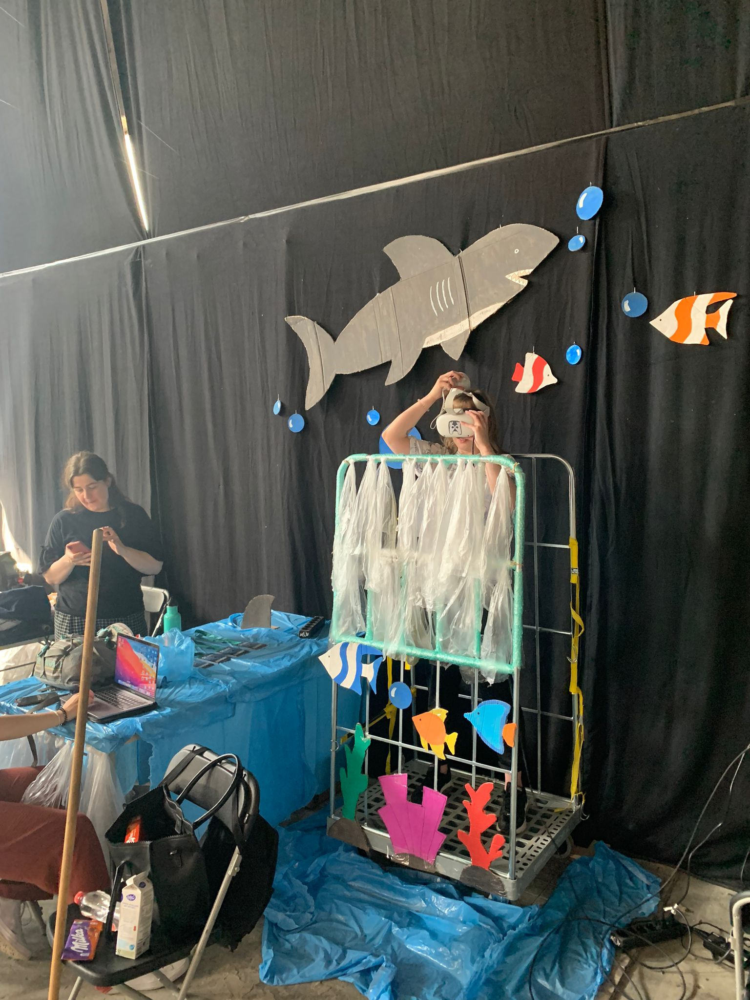

Op deze pagina is alle informatie betreffende de lab weken te vinden. Zo is er voor iedere dag een dagverslag gemaakt welke het proces illustreert, Wordt het eindproduct beschreven en is er een persoonlijke reflectie op deze pagina te vinden. Wanneer je met je cursor over een foto scrollt, zal worden aangegeven wie de foto heeft gemaakt.
Op dit gedeelte van de pagina zijn de dagverslagen geplaatst welke het proces gedurende de labweken illustreert
De eerste dag zijn we begonnen met een introductie van de lab weken en kregen we te horen in welke teams we zitten voor de aankomende
weken. Na de introductie hebben we een teambuildings opdracht gedaan welke bestond uit het maken van een logo dat niet digitaal is.
Onze groep bestond in het begin uit vijf meiden en toen en docent langs onze tafel liep noemde hij ons de spice girls.
Deze naam hebben we uiteindelijk aangehouden en door middel van gevonden materialen hebben wij een spice jar gemaakt met vijf
verschillende kleuren sterren.
Na het doen van de teambuildingsopdracht zijn we aan de slag gegaan met een verdere kennismaking en hebben we de beginselen van het
project besproken. Gedurende dit gedeelte hebben we er een nieuw teamlid bij gekregen dus hebben we opnieuw even kort kennisgemaakt.
We hebben het gehad over het programma we willen gebruiken en wat onze skills zijn en hoe deze ingezet kunnen worden tijdens de lab weken.
Verder hebben we besproken wat de beste manier is om te brainstormen en uiteindelijk zijn we begonnen met een mindmap welke wij als basis hebben gebruikt en op verder zijn gaan werken.
Zo hebben we allemaal gestemd voor onderwerpen uit de mindmap door middel van stippen.
Na het mindmappen hebben we de termen op post-it’s geschreven en gecategoriseerd op bladen geplakt. Aan de hand van deze bladen heeft ieder
groepslid van ieder blad 1 term gekozen en aan de hand van deze post-its een concept bedacht. Na het beschrijven van een concept,
werd het blad doorgeschoven naar een groepsgenoot zodat zij een eigen concept op basis van jouw post-it’s konden maken.
Uiteindelijk stonden de bladen helemaal volgeschreven met concepten en hebben we in groepsverband kritisch gekeken naar concepten die
ons aanspraken en welke haalbaar lijken te zijn.
Vandaag ben ik begonnen met het ontdekken van de oculus aangezien ik nog nooit met VR heb gewerkt, laat staan games heb gespeeld met VR.
Hierna zijn we verder gegaan met het bespreken van hetgeen wat we gister hebben gedaan en hebben we de ideeën en concepten nog een keer besproken.


 Verder heb ik op youtube naar tutorials gekeken voor Unity maar dit heeft niet veel succes geboekt omdat het internet aangeeft dat de oculus
voornamelijk draait op android of verschillende versies van het programma zelf. Ik had het gevoel dat meerdere groepsgenoten in hetzelfde
schuitje zaten daarom kwam ik met het idee om anders na de pauze met a-frame te starten omdat we hier misschien meer vooruitgang konden boeken.
Zo heb ik gekeken naar de workshop opdracht en ben daarop door gegaan, het voelde fijn om snel verandering te zien tijdens het programmeren.
Verder heb ik op youtube naar tutorials gekeken voor Unity maar dit heeft niet veel succes geboekt omdat het internet aangeeft dat de oculus
voornamelijk draait op android of verschillende versies van het programma zelf. Ik had het gevoel dat meerdere groepsgenoten in hetzelfde
schuitje zaten daarom kwam ik met het idee om anders na de pauze met a-frame te starten omdat we hier misschien meer vooruitgang konden boeken.
Zo heb ik gekeken naar de workshop opdracht en ben daarop door gegaan, het voelde fijn om snel verandering te zien tijdens het programmeren.
 Volgens mij zag de hele groep er een beetje hopeloos uit want Chris kwam met ons praten. Hij kwam met voorbeelden van vorige jaren en legde uit dat
dit meer experiences waren. Toen kwamen we als groep erachter dat onze ideeën eigenlijk te abstract, uitgebreidt en waarscheinlijk niet
haalbaar waren maar hoe kunnen we als groep echt een experience creëren?
Net toen we een frisse neus wilde halen kwam Justyna met het idee of we de kar waarop de tafels welke tijdens HCI worden werden vervoerd,
misschien konden gebruiken. We stonden met z’n drieën rondom de kar en besproken wat voor experience we konden maken voor de mensen.
Toen kwam ik met het idee dat de kar lijkt op een kooi die mensen gebruiken om met haaien te zwemmen. Misschien konden we deze kar gebruiken om een
shark-tank experience te maken waar het lijkt alsof je aan wordt gevallen door een haai? De kar zelf kan gebruikt worden om de kooi welke in het water wordt
getakeld, na te bootsen maar hoe kan je het gevoel creëren dat de kar naar beneden gaat… op een veilige manier?
Ik kwam met het idee om een barrière van hout te maken en de kooi met twee mensen op te tillen om beweging toe te voegen aan de experience en het takelen
van een kooi na te bootsen. We hebben het takelen van de kooi getest met mensen die niks over ons mogelijke concept wisten en het kantelen van de kooi bleek een succes te zijn!
Volgens mij zag de hele groep er een beetje hopeloos uit want Chris kwam met ons praten. Hij kwam met voorbeelden van vorige jaren en legde uit dat
dit meer experiences waren. Toen kwamen we als groep erachter dat onze ideeën eigenlijk te abstract, uitgebreidt en waarscheinlijk niet
haalbaar waren maar hoe kunnen we als groep echt een experience creëren?
Net toen we een frisse neus wilde halen kwam Justyna met het idee of we de kar waarop de tafels welke tijdens HCI worden werden vervoerd,
misschien konden gebruiken. We stonden met z’n drieën rondom de kar en besproken wat voor experience we konden maken voor de mensen.
Toen kwam ik met het idee dat de kar lijkt op een kooi die mensen gebruiken om met haaien te zwemmen. Misschien konden we deze kar gebruiken om een
shark-tank experience te maken waar het lijkt alsof je aan wordt gevallen door een haai? De kar zelf kan gebruikt worden om de kooi welke in het water wordt
getakeld, na te bootsen maar hoe kan je het gevoel creëren dat de kar naar beneden gaat… op een veilige manier?
Ik kwam met het idee om een barrière van hout te maken en de kooi met twee mensen op te tillen om beweging toe te voegen aan de experience en het takelen
van een kooi na te bootsen. We hebben het takelen van de kooi getest met mensen die niks over ons mogelijke concept wisten en het kantelen van de kooi bleek een succes te zijn!


Vandaag hebben we weer geprobeerd om de oculus te koppelen maar iedereen op Mayar na heeft een macbook waarop het niet lukt om de oculus te koppelen.
Samen met Do heb ik geprobeerd om Mayar te helpen met koppelen terwijl de rest van de groep aan de environment van de experience werkt.
Verder heb ik gekeken naar de ideevorming voor het concept, hoe moet het scenario eruit zien en welke beelden hebben we nodig om de experience te maken.
Zo hadden we in gedachte om een persoon van de kade op een boot te helpen en uitleg te geven door middel van een voice over.
We helpen de participant in de kooi en laten deze in het water zakken.
Omdat we de kooi willen laten bewegen en mensen in de kar willen laten stappen moeten we kijken hoe we dit zo realistisch mogelijk maar ook
zo veilig mogelijk kunnen maken. Een gedeelte van de groep wilde een schans / ramp maken voor de kooi maar mij leek dat niet heel veilig
omdat je veel mankracht nodig hebt om de kooi van een schans te laten gaan. Daarom leek het mij slim om een omheining voor de kooi te maken
met wat extra ruimte zodat we de kooi kunnen schudden maar dat de kooi niet wegrolt als iemand in de kooi stapt.
Omdat er nog steeds wat struggles waren met het koppelen van de oculus en het niet efficiënt om dit probleem te verhelpen met de gehele groep,
hebben ik en Do aangeboden om naar de winkels te gaan. Voordat we naar de winkels gingen, hebben we de kooi opgemeten om hout te kopen.
Ik dacht aan de experience en het feit dat mensen hun handen door de fysieke kooi zullen steken. Het is misschien best gek en onrealistisch als je
door de VR bril ziet dat je in het water bent en in het echt helemaal niks voelt. Daarom dacht ik dat het een idee kan zijn om iets van bouwplastic
aan de kooi te hangen zodat de participant toch iets van een lichte weerstand of een textuur voelt wanneer zij hun handen door de kooi steken.
Ook kan het goed zijn om geluiden in te zetten om de omgeving echter te maken en gebruik te maken van lucht of iets dergelijks.
We zijn langs verschillende winkels gegaan en hebben letterlijk naar alles in de winkels gekeken om op ideeën te komen en te kijken
naar materialen die we zouden kunnen gebruiken. Het hout was een beetje prijzig en we wilden het budget zo laag mogelijk waren,
gelukkig kwamen we erachter dat de vader van Do misschien hout over had en deze voor ons zou kunnen zagen.


 Eenmaal terug bij Maakhaven heb ik gezocht naar assets en een beetje geprobeerd te ontdekken wat mogelijk is in Unity betreffende ons concept.
Zo heb ik onderzoek gedaan of het mogelijk is om geluid te koppelen aan een Unity bestand en of dit kan via de oculus of dat er een koptelefoon
of iets dergelijks moet komen. Ook heb ik van het bouwplastic enkele stroken geknipt en deze aan de kooi gehangen om te kijken of dit een gewenst
effect zou hebben. We hebben het met meerdere mensen getest en het was een succes!
Eenmaal terug bij Maakhaven heb ik gezocht naar assets en een beetje geprobeerd te ontdekken wat mogelijk is in Unity betreffende ons concept.
Zo heb ik onderzoek gedaan of het mogelijk is om geluid te koppelen aan een Unity bestand en of dit kan via de oculus of dat er een koptelefoon
of iets dergelijks moet komen. Ook heb ik van het bouwplastic enkele stroken geknipt en deze aan de kooi gehangen om te kijken of dit een gewenst
effect zou hebben. We hebben het met meerdere mensen getest en het was een succes!
Deze dag was ik ziek en dus niet aanwezig.
Vandaag hebben we als eerste een meeting gehouden met de groep. Tijdens deze meeting hebben we de stand van zaken en de aanpak voor de dag
besproken. Ook hebben we met docenten besproken wat we het beste kunnen doen vandaag aangezien we steeds problemen ervaren met het
koppelen van de Oculus. Waarop de docenten hebben gezegd dat we het beste kunnen wachten op William die later vandaag komt, aangezien
hij ARVR expert is.
Ik heb gezocht naar assets die gebruikt kunnen worden om een hek mee te maken om zo hopelijk uiteindelijk in Unity een kooi te kunnen maken.
Ook heb ik gezocht naar assets voor bubbels zodat we deze in onze online onderwaterwereld kunnen implementeren.


 We hebben een gedeelte van de dag als groep besteed aan het proberen te koppelen van de oculus aan een computer,
helaas niet met veel succes.
Ik heb online gezocht naar rechtenvrije geluidsfragmenten die ingezet kunnen worden om de experience nog echter te maken.
Denk hierbij aan het ratelen van kettingen, bubbels en havengeluiden als de kooi naar beneden getakeld wordt, of scuba /
onderwatergeluiden als de kooi zich online in het water bevindt. Ook heb ik naar mijn gevonden informatie gekeken voor
een manier om geluid toe te voegen aan een unity bestand en dit getest.
Ik wilde graag de rest van de groep helpen met werken in Unity, zo kan iedereen een gedeelte doen en kunnen we dit uiteindelijk allemaal
samenvoegen tot 1 bestand. Helaas kon ik het gezamenlijke bestand niet openen en had ik niet genoeg ruimte op mijn laptop voor de
benodigde software. Daarom heb ik geprobeerd om zoveel mogelijk ruimte op mijn laptop te maken en ondertussen een online overzicht te
maken van dingen die nog gedaan moeten worden zodat er uiteindelijk een planning gemaakt kan worden.
We hebben een gedeelte van de dag als groep besteed aan het proberen te koppelen van de oculus aan een computer,
helaas niet met veel succes.
Ik heb online gezocht naar rechtenvrije geluidsfragmenten die ingezet kunnen worden om de experience nog echter te maken.
Denk hierbij aan het ratelen van kettingen, bubbels en havengeluiden als de kooi naar beneden getakeld wordt, of scuba /
onderwatergeluiden als de kooi zich online in het water bevindt. Ook heb ik naar mijn gevonden informatie gekeken voor
een manier om geluid toe te voegen aan een unity bestand en dit getest.
Ik wilde graag de rest van de groep helpen met werken in Unity, zo kan iedereen een gedeelte doen en kunnen we dit uiteindelijk allemaal
samenvoegen tot 1 bestand. Helaas kon ik het gezamenlijke bestand niet openen en had ik niet genoeg ruimte op mijn laptop voor de
benodigde software. Daarom heb ik geprobeerd om zoveel mogelijk ruimte op mijn laptop te maken en ondertussen een online overzicht te
maken van dingen die nog gedaan moeten worden zodat er uiteindelijk een planning gemaakt kan worden.
Om de dag te beginnen zijn we de dag begonnen door een voortgangsgesprek met de groep. Ook is er een scenario geschreven voor de experience.
Deze dag zijn we erachter gekomen dat het alleen mogelijk om in 1 document op 1 computer te werken. Dit voelde als een stap terug maar
tegelijkertijd als een stap vooruit omdat het eindelijk lukte om de oculus succesvol te koppelen aan een laptop.
Justyne had vooruitgang geboekt met het Unity bestand en heeft mij uitleg gegeven over hoe het document in elkaar zit
en hoe bepaalde elementen werken. Omdat het eindelijk lukte om elementen in het Unity bestand te plaatsen en de oculus te
koppelen, konden we eindelijk een VR gerelateerd iets testen met mensen.


 Aan de hand van dit succes hebben we nagedacht hoe we de online omgeving het beste kunnen koppelen met fysieke elementen
binnen de experience. Dit was nodig omdat de deadline aan het naderen is en we hoogstwaarschijnlijk niet kunnen maken wat we in
eerste instantie in gedachte hebben met een boot en het in het water takelen van de kooi.
Verder heb ik samen met Do een overzicht gemaakt van benodigdheden en de mogelijke indeling voor de expo.
Hoe willen we de ruimte inrichten? Gedurende de dag heb ik mijn werk gebeld voor restmaterialen en deze heb ik aan het einde van
de dag opgehaald. Ook heb ik de rest van de benodigdheden gekocht zodat we niet meer naar de winkel hoefden. Dit was nogal een
challenge want ik moest best wat winkels af omdat ik steeds net een ding niet miste.
Aan de hand van dit succes hebben we nagedacht hoe we de online omgeving het beste kunnen koppelen met fysieke elementen
binnen de experience. Dit was nodig omdat de deadline aan het naderen is en we hoogstwaarschijnlijk niet kunnen maken wat we in
eerste instantie in gedachte hebben met een boot en het in het water takelen van de kooi.
Verder heb ik samen met Do een overzicht gemaakt van benodigdheden en de mogelijke indeling voor de expo.
Hoe willen we de ruimte inrichten? Gedurende de dag heb ik mijn werk gebeld voor restmaterialen en deze heb ik aan het einde van
de dag opgehaald. Ook heb ik de rest van de benodigdheden gekocht zodat we niet meer naar de winkel hoefden. Dit was nogal een
challenge want ik moest best wat winkels af omdat ik steeds net een ding niet miste.


Vandaag kregen we te horen dat we een poster kunnen laten maken en dit wilde we heel graag. Helaas was Do de enige met
Illustrator op haar computer dus de bijdrage die ik daarbij heb geleverd is het zoeken van foto’s voor de vormgeving van de expo poster.
 Verder heb ik gezocht naar assets en geëxperimenteerd in Unity om een bijdrage te kunnen leveren aan het virtuele eindproduct.
Ik heb samen met Do karton geknipt en geschilderd voor de aankleding voor de expo. En ik heb de staff passes ontworpen voor het
team zodat we deze tijdens de expo kunnen gebruiken zodat mensen kunnen zien bij welke installatie wij horen.
Verder heb ik gezocht naar assets en geëxperimenteerd in Unity om een bijdrage te kunnen leveren aan het virtuele eindproduct.
Ik heb samen met Do karton geknipt en geschilderd voor de aankleding voor de expo. En ik heb de staff passes ontworpen voor het
team zodat we deze tijdens de expo kunnen gebruiken zodat mensen kunnen zien bij welke installatie wij horen.

Vandaag ben ik vroeg naar school gegaan om het design van de staff passes te printen. Eenmaal op Maakhaven ben ik
begonnen met het maken van de staff passes en werd ik later geholpen door Justyna.
Ik heb de kooi oculus proof gemaakt met bubbeltjes plastic zodat de controllers niet beschadigen wanneer
een participant hun handen buiten de kooi proberen te steken. Ook heb ik gewerkt aan de omgeving voor de expo
en er met de andere meiden voor gezorgd dat de omgeving al helemaal in orde is zodat we er op de dag van de
expo weinig meer aan hoeven te doen.

Verder hebben we het project opnieuw volop getest en hebben we een scenario geoefend voor de expo morgen.

Vandaag hebben we de laatste testen gedaan en de puntjes op de i gezet voor de experience.
Ik moet zeggen dat het heel tof was om alles zo samen te zien komen en te zien dat mensen enthousiast waren over ons concept.
Ook was het tof dat we het project eindelijk konden besturen zonder kabel of laptop. Ik voelde mij erg trots toen ik zag hoe
populair onze experience was tijdens de expo. Uiteindelijk hadden we zoveel mensen die onze experience wilde proberen dat de
oculus steeds leeg was en we deze tussen participanten door steeds op moesten laden. Het was ook heel tof om te zien wat anderen
hadden gemaakt tijdens de lab weken.


Het eindproduct is een virtual reality environment waar mensen de schrik van hun leven kunnen krijgen. Voor de experience is er een onderwaterwereld gecreërd waar de participant kan duiken met haaien. In de onderwaterwereld zal de participant zich in een shark cage bevinden waar de participant niet uit kan. De omgeving is gevuld met vissen, koraal en haaien welke bewegen en over en langs de kooi heen zwemmen. Wanneer een participant de experience uit wil proberen wordt er eerst een korte instructie gegeven over de werking en besturing van de experience. Zo worden de controllers aan de participant gegeven zodat zij deze om kunnen doen en zal er worden uitgelegd dat de linker joystick op de controller gebruikt kan worden om te bewegen in de omgeving en de rechter controller kan gebruikt worden om het perspectief binnen de experience aan te passen. Ook wordt er verteld dat het de participant hen handen door de fysieke kooi mogen steken. Vervolgens zal de participant in de kooi begeleidt worden en zal de participant uitleg krijgen over het opzetten van de headset en dat het gewenst is om aan te geven wanneer zij de experience willen beïndigen. Wanneer de participant ready to go is zal de kooi door middel van een band worden afgesloten zodat de participant niet uit de kooi kan vallen. Tijdens de experience zal eerst worden gevraagd wat de participant ziet zodat wij weten dat alles goed gaat en er geen nieuwe guard gemaakt hoeft te worden. Wanneer alles in orde is zullen wij de participant aanmoedigen om de handen door de kooi heen te steken o zo de VR haai te triggeren. Dit ziet er echt en intimiderend uit waardoor de participant een schrikreactie kan tonen. Om het geheel nog echter te maken zal de kooi door een van ons heen en weer geschudt en gewiebeld worden.

Dit is hoe de participant de experience ervaart wanneer zij de VR bril dragen
En dit is hoe het eruit ziet in de echte wereld
We hebben gedurende de lab weken flink moeten schalen en schakelen maar uiteindelijk ben ik trots op wat we neer hebben gezet als groep zijnde. Zeker als je kijkt naar hoe populair onze installatie was tijdens de expo en de reacties van de participerende mensen was echt geweldig. Ik vind het moeilijk om de kwaliteit van het product te beschrijven aangezien je als een van de makers altijd wel dingen weet te benoemen of ziet welke anders of beter hadden gekund. Ik weet dat we de echt een uitgebreide experience neer hadden willen zetten en als we meer tijd hadden gehad dat het dan nog toffer was geworden. Uiteindelijk hebben we een concept neergezet dat compleet was voor het kerngedeelte, het was nog steeds een unieke experience maar wat minder een verhaal zoals het skydive voorbeeld dat Chris ons had gegeven tijdens de lab weken. Ik zou mijn proces beschrijven als veelzijdig, ik was constant aan het bedenken wat voor taken ik op mij kon nemen en was voor het grootste gedeelte steeds bezig. Ik was niet de beste in Unity maar ik heb wel meerdere keren geprobeerd om bij te dragen of het nou was voor het proberen met werken in Unity zelf of het zoeken naar assets en tutorials. Ook heb ik veel nagedacht over hoe we offline aan de experience konden werken. Dus hoe kunnen we de kooi veilig maken voor de expo, hoe kunnen we met fysieke dingen de experience nog echter maken voor de participerende mensen, wat voor geluidseffecten kunnen we toevoegen, etc. Waar andere mensen meer aan het technische gedeelte hebben bijgedragen, ben ik veel bezig geweest met nadenken over de dingen eromheen om de experience een compleet geheel te maken. Persoonlijk denk ik dat het idee van twee weken fysiek en fulltime werken aan een project niet iets is waar heel veel mensen enorm om staan te springen. Echter zou ik zeggen dat ik vrij gemotiveerd en optimistisch was om aan het project te beginnen. Ik had de verwachting dat dit de leukste twee weken van het schooljaar zouden zijn maar ik moet helaas zeggen dat dit voor mij niet het geval was, ik vond het vreselijk en vind het moeilijk om positief op de lab weken terug te kijken. Vanaf de eerste dag was het duidelijk dat het niet helemaal boterde tussen een van de groepsleden en mijzelf. Ik ben iemand die graag ideeën aandraagt en ik ben niet bang om mijzelf uit te spreken in de groep, echter werd dit door deze persoon niet op prijs gesteld omdat het voornamelijk belangrijk was dat de groep deed wat deze persoon wilde doen. Persoonlijk was ik onder de veronderstelling dat de lab weken een groepsproject moeten zijn maar zo voelde het soms niet. Na de eerste week wilde ik eigenlijk het liefste stoppen omdat ik de lab weken niet alleen fysiek maar ook mentaal als uitputtend ervaarde. Ik voelde mij ondergewaardeerd, gekleineerd, gegaslight en letterlijk genegeerd door bovengenoemd groepslid. Ik heb meerdere dagen thuis gehuild omdat ik me mentaal zo teneergeslagen voelde. Ik had graag meer technische dingen willen doen maar wanneer ik het opbracht in de groep werd er door bovengenoemd groepslid gezegd dat dit tijdverspilling was voor de groep en het eindproduct omdat er maar op 1 computer in 1 bestand gewerkt kon worden. Op een begeven moment voel je dan de motivatie ook wel echt verdwijnen. Iedere groep heeft natuurlijk zo zijn problemen maar ik heb wel het gevoel dat als ik in een andere groep had gezeten dat ik dan veels positiever op de lab weken terug had kunnen kijken. Ik probeer het maar te zien als de ultieme test wat betreft werken in groepsverband. Daarnaast zou ik wel kunnen zeggen dat ik veel heb geleerd van het geheel en dan voornamelijk op het gebied van het bedenken van ideeën / concepten en creëren van een complete experience. Uit de testen die wij met meerdere mensen hebben uitgevoerd bleek dat het schudden van de kooi en het plastic voor de tralies elementen zijn die essentieel gebleken zijn om de experience een compleet geheel te maken. Tot slot was het interessant om te leren hoe je omgaat het het schakelen en schalen van het project. In het begin had de groep bepaalde ideeën die uiteindelijk helemaal niet haalbaar bleken te zijn vanwege de beschikbare tijd en groepskennis. Maar ook het uiteindelijke concept is heel erg geschaald van een storyline naar een directe experience en uiteindelijk maakt dit, je tegen je eigen verwachting in, niet minder trots op het eindresultaat.